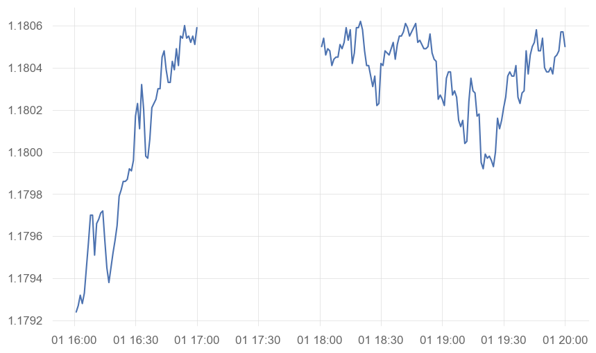
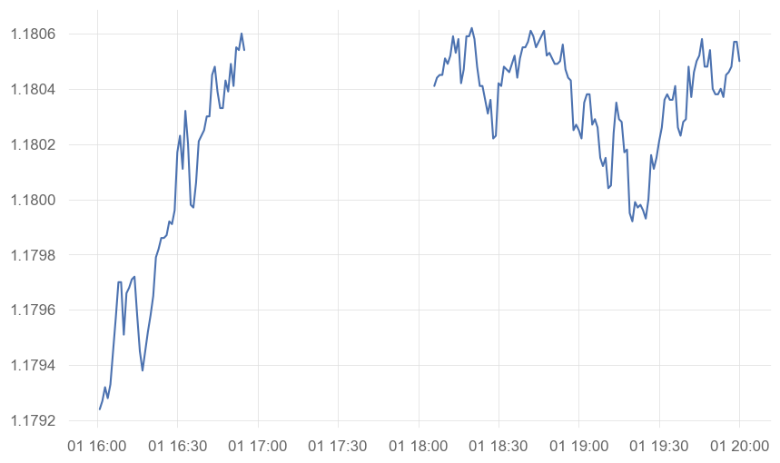
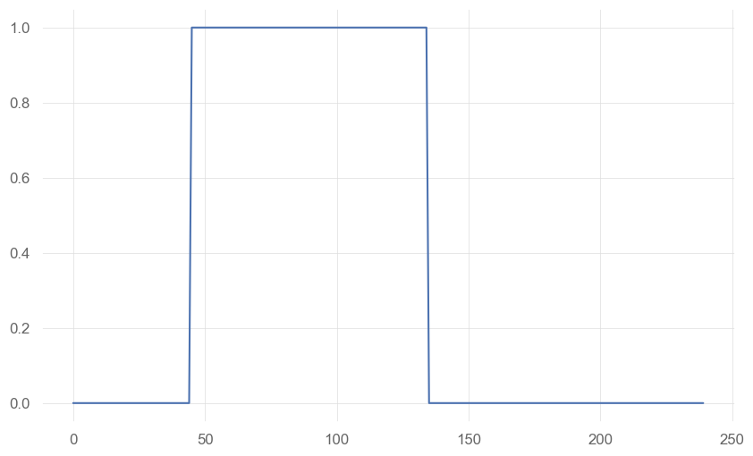
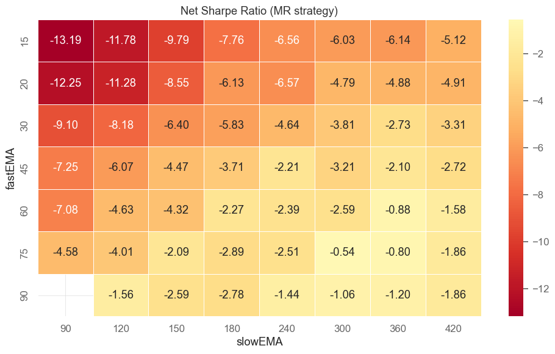
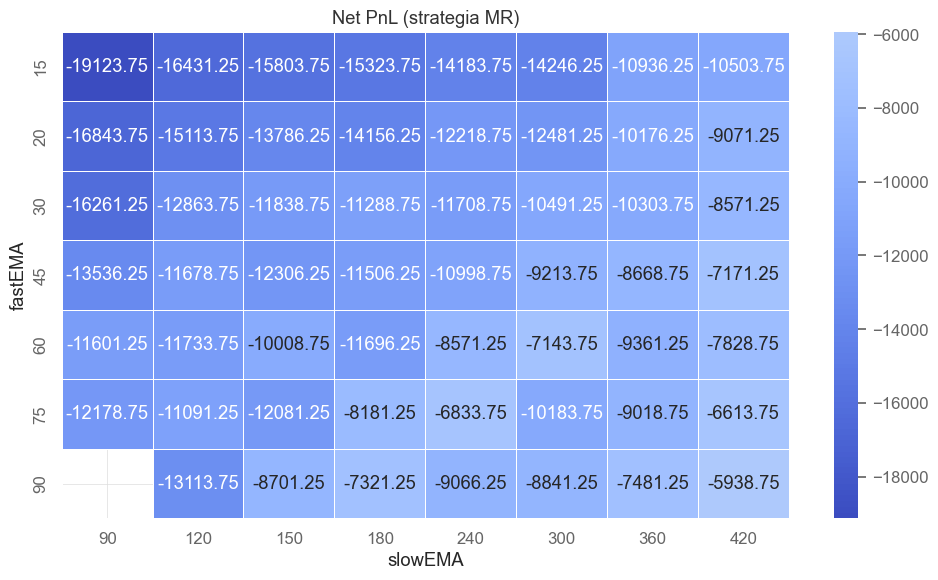
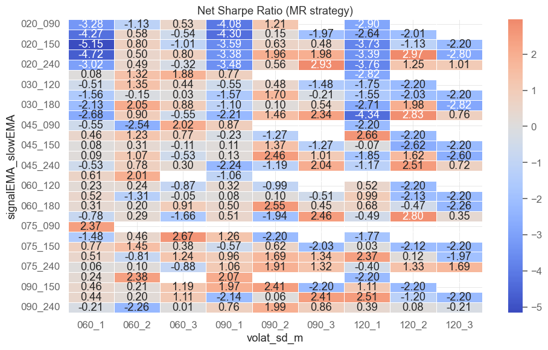
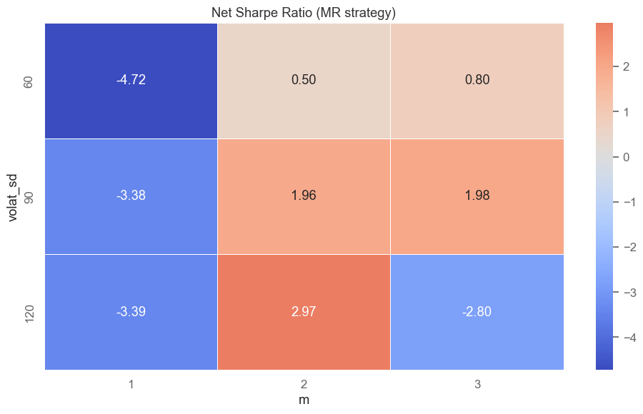
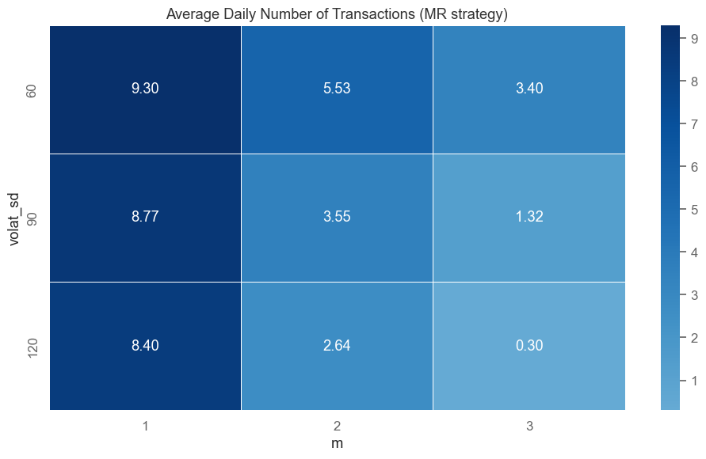

# lets load the necessary libraries
import pandas as pd
import matplotlib.pyplot as plt
import seaborn as sns
import numpy as np
import quantstats as qs
import warnings
warnings.simplefilter(action="ignore", category=UserWarning) # ignore warnings
warnings.simplefilter(action="ignore", category=RuntimeWarning) # ignore runtime warnings
# lets add the functions path to sys.path
import sys
sys.path.append('functions')- Optimization of a simple strategy
# lets load the quotations of currency futures
currencies = pd.read_parquet("currencies.parquet")
currencies.head()| datetime | A6 | E6 | B6 | C6 | J6 | |
|---|---|---|---|---|---|---|
| 0 | 2025-07-01 00:01:00+00:00 | 0.65694 | 1.17902 | 1.37390 | 0.734813 | 0.006950 |
| 1 | 2025-07-01 00:02:00+00:00 | 0.65688 | 1.17893 | 1.37396 | 0.734765 | 0.006950 |
| 2 | 2025-07-01 00:03:00+00:00 | 0.65670 | 1.17886 | 1.37386 | 0.734727 | 0.006951 |
| 3 | 2025-07-01 00:04:00+00:00 | 0.65671 | 1.17891 | 1.37397 | 0.734819 | 0.006951 |
| 4 | 2025-07-01 00:05:00+00:00 | 0.65664 | 1.17883 | 1.37391 | 0.734781 | 0.006949 |
# Lets set the datetime index
currencies['datetime'] = pd.to_datetime(currencies['datetime'])
currencies.set_index('datetime', inplace = True)# data includes quotations (weighted average of bid and ask)
# of futures contracts for:
# E6 - EUR/USD
# J6 - JPY/USD
# A6 - AUD/USD
# C6 - CAD/USD
# B6 - GPB/USD
# one-minute data for one quarter (2025Q3)
# specifications of the contracts:
# E6 - point value = 125 000$, transaction cost = 10$
# J6 - point value = 12 500 000$, transaction cost = 10$
# A6 - point value = 100 000$, transaction cost = 10$
# C6 - point value = 100 000$, transaction cost = 10$
# B6 - point value = 62 500$, transaction cost = 10$
# IMPORTANT !!
# these currencies are traded almost 24 hours a day (except weekends)
# with a break between 17:00 and 18:00 (New York time - same as in the data)# Let's split the data into training and test sets
# let's assume that data for the first two months (July and August) is for training
# and data for September is for testing
currencies_train = currencies[(currencies.index.month == 7) | (currencies.index.month == 8)]
currencies_test = currencies[currencies.index.month == 9]
currencies_train.tail()| A6 | E6 | B6 | C6 | J6 | |
|---|---|---|---|---|---|
| datetime | |||||
| 2025-08-31 23:55:00+00:00 | 0.65442 | 1.17045 | 1.35197 | 0.727966 | 0.006806 |
| 2025-08-31 23:56:00+00:00 | 0.65454 | 1.17059 | 1.35209 | 0.728009 | 0.006806 |
| 2025-08-31 23:57:00+00:00 | 0.65459 | 1.17073 | 1.35220 | 0.728035 | 0.006807 |
| 2025-08-31 23:58:00+00:00 | 0.65465 | 1.17075 | 1.35228 | 0.728056 | 0.006807 |
| 2025-08-31 23:59:00+00:00 | 0.65471 | 1.17082 | 1.35229 | 0.728051 | 0.006808 |
# E6 - EUR/USD
# J6 - JPY/USD
# A6 - AUD/USD
# C6 - CAD/USD
# B6 - GPB/USD
# Lets take E6 (EUR/USD) as an example
E6 = currencies_train['E6']
# check sample break in session
plt.figure(figsize = (10,6))
plt.plot(E6[960:1200])
# initial assumptions about
# assumption 1
# we do not use the first 5 minutes of the session (18:01-18:05)
# and the last 5 minutes before the break (16:56-17:00)
# let's insert missing data there
E6.loc[E6.between_time("18:01", "18:05").index] = np.nan
E6.loc[E6.between_time("16:56", "17:00").index] = np.nan
# let's see how the plot looks after inserting missing data
plt.figure(figsize = (10,6))
plt.plot(E6[960:1200])
# now the break in the data is longerC:\Users\ptwoj\AppData\Local\Temp\ipykernel_39416\1762704899.py:8: SettingWithCopyWarning:
A value is trying to be set on a copy of a slice from a DataFrame
See the caveats in the documentation: https://pandas.pydata.org/pandas-docs/stable/user_guide/indexing.html#returning-a-view-versus-a-copy
E6.loc[E6.between_time("18:01", "18:05").index] = np.nan
C:\Users\ptwoj\AppData\Local\Temp\ipykernel_39416\1762704899.py:9: SettingWithCopyWarning:
A value is trying to be set on a copy of a slice from a DataFrame
See the caveats in the documentation: https://pandas.pydata.org/pandas-docs/stable/user_guide/indexing.html#returning-a-view-versus-a-copy
E6.loc[E6.between_time("16:56", "17:00").index] = np.nan
# assumption 2
# we do not trade during the first quarter of an hour after the break (18:00-18:15)
# and in the last quarter of an hour before the end of the session (16:46-17:00).
# Let's assume that we CLOSE ALL POSITIONS before the break (at 16:45).
# so finally, the position will always be 0 between 16:46 and 18:15.
# similarly as earlier, let's create an object named "pos_flat"
# = 1 if position has to be flat (= 0) - we do not trade
# = 0 otherwise
# let's fill it first with zeros
pos_flat = np.zeros(len(E6))# put our assumptions into pos_flat
# we do not trade in the first quarter of an hour after the break (18:00-18:15)
# and in the last quarter of an hour after the break (16:46-17:00).
# Of course, we also do not trade during the break (17:00-18:00)
# Let's create a time mask based on the E6 index
breaks = (E6.index.time >= pd.to_datetime("16:46").time()) & \
(E6.index.time <= pd.to_datetime("18:15").time())
# Assign 1 to pos_flat where the breaks mask is True
pos_flat[breaks] = 1
# let's see an example break in the session from the perspective of pos_flat
plt.figure(figsize = (10,6))
plt.plot(pos_flat[960:1200])
# lets check which weekdays we have data for
dweek_ = E6.index.dayofweek + 1 # Adjust so that 0 = Monday, ..., 6 = Sunday
print(dweek_.value_counts())
# no Saturdays in the datadatetime
4 12959
3 12957
2 12955
1 11520
5 9188
7 3771
Name: count, dtype: int64# lets create a time_ object (vector of times)
time_ = E6.index.time
# and let's fill the pos_flat vector with ones for weekends
pos_flat[((dweek_ == 5) & (time_ > pd.to_datetime('17:00').time())) | # end of Friday
(dweek_ == 6) | # whole Saturday (just in case)
((dweek_ == 7) & (time_ <= pd.to_datetime('18:00').time()))] = 1 # beginning of SundayStrategy 1: two intersecting moving averages
# we check various parameter combinations in a loop
def mySR(x, scale):
return np.sqrt(scale) * np.nanmean(x) / np.nanstd(x)
fastEMA_parameters = [15, 20, 30, 45, 60, 75, 90]
slowEMA_parameters = [90, 120, 150, 180, 240, 300, 360, 420]
# create a dataframe to store results
summary_all_2MAs = pd.DataFrame()
# Loop over different parameter combinations
for fastEMA in fastEMA_parameters:
for slowEMA in slowEMA_parameters:
# ensure that fastEMA is less than slowEMA
if fastEMA >= slowEMA:
continue
print(f"fastEMA = {fastEMA}, slowEMA = {slowEMA}")
# We calculate the appropriate EMA
fastEMA_values = E6.ewm(span = fastEMA).mean()
slowEMA_values = E6.ewm(span = slowEMA).mean()
# Insert NaNs wherever the original price is missing
fastEMA_values[E6.isna()] = np.nan
slowEMA_values[E6.isna()] = np.nan
# Calculate position for momentum strategy
cond2b_mom_long = fastEMA_values.shift(1) > slowEMA_values.shift(1)
# let's add filters that check for the presence of NaN values
fastEMA_nonmiss = fastEMA_values.shift(1).notna()
slowEMA_nonmiss = slowEMA_values.shift(1).notna()
# Now we can add these conditions to our strategies
# if any of the values is missing,
# we cannot make a position decision
pos_mom = np.where(fastEMA_nonmiss & slowEMA_nonmiss,
np.where(cond2b_mom_long, 1, -1),
np.nan)
pos_mr = -pos_mom
# Set position to 0 where pos_flat is 1
pos_mom[pos_flat == 1] = 0
pos_mr[pos_flat == 1] = 0
# Calculate gross pnl
pnl_gross_mom = np.where(np.isnan(pos_mom * E6.diff()), 0, pos_mom * E6.diff() * 125000)
pnl_gross_mr = np.where(np.isnan(pos_mr * E6.diff()), 0, pos_mr * E6.diff() * 125000)
# point value for E6
# Calculate number of transactions
ntrans = np.abs(np.diff(pos_mom, prepend = 0))
# Calculate net pnl
pnl_net_mom = pnl_gross_mom - ntrans * 10 # cost $10 per transaction on E6
pnl_net_mr = pnl_gross_mr - ntrans * 10 # cost $10 per transaction on E6
# Aggregate to daily data
pnl_gross_mom = pd.Series(pnl_gross_mom)
pnl_gross_mom.index = E6.index.time
pnl_gross_mom_d = pnl_gross_mom.groupby(E6.index.date).sum()
pnl_gross_mr = pd.Series(pnl_gross_mr)
pnl_gross_mr.index = E6.index.time
pnl_gross_mr_d = pnl_gross_mr.groupby(E6.index.date).sum()
pnl_net_mom = pd.Series(pnl_net_mom)
pnl_net_mom.index = E6.index.time
pnl_net_mom_d = pnl_net_mom.groupby(E6.index.date).sum()
pnl_net_mr = pd.Series(pnl_net_mr)
pnl_net_mr.index = E6.index.time
pnl_net_mr_d = pnl_net_mr.groupby(E6.index.date).sum()
ntrans = pd.Series(ntrans)
ntrans.index = E6.index.time
ntrans_d = ntrans.groupby(E6.index.date).sum()
# Calculate Sharpe Ratio and PnL
gross_SR_mom = mySR(pnl_gross_mom_d, scale=252)
net_SR_mom = mySR(pnl_net_mom_d, scale=252)
gross_PnL_mom = pnl_gross_mom_d.sum()
net_PnL_mom = pnl_net_mom_d.sum()
gross_SR_mr = mySR(pnl_gross_mr_d, scale=252)
net_SR_mr = mySR(pnl_net_mr_d, scale=252)
gross_PnL_mr = pnl_gross_mr_d.sum()
net_PnL_mr = pnl_net_mr_d.sum()
av_daily_ntrans = ntrans_d.mean()
# Collect necessary results into one object
summary = pd.DataFrame({
'fastEMA': fastEMA,
'slowEMA': slowEMA,
'period': '2013-08',
'gross_SR_mom': gross_SR_mom,
'net_SR_mom': net_SR_mom,
'gross_PnL_mom': gross_PnL_mom,
'net_PnL_mom': net_PnL_mom,
'gross_SR_mr': gross_SR_mr,
'net_SR_mr': net_SR_mr,
'gross_PnL_mr': gross_PnL_mr,
'net_PnL_mr': net_PnL_mr,
'av_daily_ntrans': av_daily_ntrans
}, index=[0])
# Append results to the summary
summary_all_2MAs = pd.concat([summary_all_2MAs, summary], ignore_index=True)fastEMA = 15, slowEMA = 90
fastEMA = 15, slowEMA = 120
fastEMA = 15, slowEMA = 150
fastEMA = 15, slowEMA = 180
fastEMA = 15, slowEMA = 240
fastEMA = 15, slowEMA = 300
fastEMA = 15, slowEMA = 360
fastEMA = 15, slowEMA = 420
fastEMA = 20, slowEMA = 90
fastEMA = 20, slowEMA = 120
fastEMA = 20, slowEMA = 150
fastEMA = 20, slowEMA = 180
fastEMA = 20, slowEMA = 240
fastEMA = 20, slowEMA = 300
fastEMA = 20, slowEMA = 360
fastEMA = 20, slowEMA = 420
fastEMA = 30, slowEMA = 90
fastEMA = 30, slowEMA = 120
fastEMA = 30, slowEMA = 150
fastEMA = 30, slowEMA = 180
fastEMA = 30, slowEMA = 240
fastEMA = 30, slowEMA = 300
fastEMA = 30, slowEMA = 360
fastEMA = 30, slowEMA = 420
fastEMA = 45, slowEMA = 90
fastEMA = 45, slowEMA = 120
fastEMA = 45, slowEMA = 150
fastEMA = 45, slowEMA = 180
fastEMA = 45, slowEMA = 240
fastEMA = 45, slowEMA = 300
fastEMA = 45, slowEMA = 360
fastEMA = 45, slowEMA = 420
fastEMA = 60, slowEMA = 90
fastEMA = 60, slowEMA = 120
fastEMA = 60, slowEMA = 150
fastEMA = 60, slowEMA = 180
fastEMA = 60, slowEMA = 240
fastEMA = 60, slowEMA = 300
fastEMA = 60, slowEMA = 360
fastEMA = 60, slowEMA = 420
fastEMA = 75, slowEMA = 90
fastEMA = 75, slowEMA = 120
fastEMA = 75, slowEMA = 150
fastEMA = 75, slowEMA = 180
fastEMA = 75, slowEMA = 240
fastEMA = 75, slowEMA = 300
fastEMA = 75, slowEMA = 360
fastEMA = 75, slowEMA = 420
fastEMA = 90, slowEMA = 120
fastEMA = 90, slowEMA = 150
fastEMA = 90, slowEMA = 180
fastEMA = 90, slowEMA = 240
fastEMA = 90, slowEMA = 300
fastEMA = 90, slowEMA = 360
fastEMA = 90, slowEMA = 420# lets see top 5 stategies with respect to net_SR_mr
summary_all_2MAs.sort_values(by = 'net_SR_mr',
ascending = False).head(5)| fastEMA | slowEMA | period | gross_SR_mom | net_SR_mom | gross_PnL_mom | net_PnL_mom | gross_SR_mr | net_SR_mr | gross_PnL_mr | net_PnL_mr | av_daily_ntrans | |
|---|---|---|---|---|---|---|---|---|---|---|---|---|
| 54 | 90 | 420 | 2013-08 | 0.556943 | -1.864757 | 1090.0 | -3781.25 | -0.556943 | -3.132304 | -1090.0 | -5938.75 | 9.169811 |
| 47 | 75 | 420 | 2013-08 | 0.696816 | -1.863804 | 1385.0 | -3866.25 | -0.696816 | -3.459843 | -1385.0 | -6613.75 | 9.886792 |
| 44 | 75 | 240 | 2013-08 | 0.364396 | -2.505579 | 745.0 | -5366.25 | -0.364396 | -3.487748 | -745.0 | -6833.75 | 11.509434 |
| 31 | 45 | 420 | 2013-08 | 0.321648 | -2.715375 | 662.5 | -5868.75 | -0.321648 | -3.629808 | -662.5 | -7171.25 | 12.301887 |
| 50 | 90 | 180 | 2013-08 | 0.386670 | -2.781942 | 772.5 | -5798.75 | -0.386670 | -3.796595 | -772.5 | -7321.25 | 12.377358 |
# lets import a function written by the lecturer
# to visualize the strategy results in a form of a heatmap
from functions.plot_heatmap import plot_heatmap# we wil use it to visualize net SR values
# for the mean reversion strategy (MR)
plot_heatmap(
summary_all_2MAs,
value_col = 'net_SR_mom',
index_col = 'fastEMA',
columns_col = 'slowEMA',
title = 'Net Sharpe Ratio (MR strategy)'
)
# none of the parameter combinations
# provides a positive net SR value
# zobaczmy teraz jak wygląda net PnL dla strategii MR
plot_heatmap(
summary_all_2MAs,
value_col = 'net_PnL_mr',
index_col = 'fastEMA',
columns_col = 'slowEMA',
cmap = "coolwarm",
title = 'Net PnL (strategia MR)'
)
Strategy 2: volatility breakout
# lets use fastEMA as the strategy signal
# and use slowEMA+/-m*std as volatility boundaries
from functions.position_VB import positionVB
# we check various parameter combinations in a loop
signalEMA_parameters = [20, 30, 45, 60, 75, 90]
slowEMA_parameters = [90, 120, 150, 180, 240]
volat_sd_parameters = [60, 90, 120]
m_parameters = [1, 2, 3]
# create a dataframe to store results
summary_all_breakout = pd.DataFrame()
# loop over different parameter combinations
for signalEMA in signalEMA_parameters:
print(f"signalEMA = {signalEMA}")
for slowEMA in slowEMA_parameters:
for volat_sd in volat_sd_parameters:
for m in m_parameters:
# We calculate the appropriate EMA
signalEMA_values = E6.ewm(span = signalEMA).mean().to_numpy()
slowEMA_values = E6.ewm(span = slowEMA).mean().to_numpy()
# We calculate the standard deviation
volat_sd_values = E6.rolling(window = volat_sd).std().to_numpy()
# Insert NaNs wherever the original price is missing
signalEMA_values[E6.isna()] = np.nan
slowEMA_values[E6.isna()] = np.nan
volat_sd_values[E6.isna()] = np.nan
# Calculate position for momentum strategy
pos_mom = positionVB(signal = signalEMA_values,
lower = slowEMA_values - m * volat_sd_values,
upper = slowEMA_values + m * volat_sd_values,
pos_flat = pos_flat,
strategy = "mom")
pos_mr = -pos_mom
# Calculate gross pnl
pnl_gross_mom = np.where(np.isnan(pos_mom * E6.diff()), 0, pos_mom * E6.diff() * 125000)
pnl_gross_mr = np.where(np.isnan(pos_mr * E6.diff()), 0, pos_mr * E6.diff() * 125000)
# point value for E6
# Calculate number of transactions
ntrans = np.abs(np.diff(pos_mom, prepend = 0))
# Calculate net pnl
pnl_net_mom = pnl_gross_mom - ntrans * 10 # cost $10 per transaction on E6
pnl_net_mr = pnl_gross_mr - ntrans * 10 # cost $10 per transaction on E6
# Aggregate to daily data
pnl_gross_mom = pd.Series(pnl_gross_mom)
pnl_gross_mom.index = E6.index.time
pnl_gross_mom_d = pnl_gross_mom.groupby(E6.index.date).sum()
pnl_gross_mr = pd.Series(pnl_gross_mr)
pnl_gross_mr.index = E6.index.time
pnl_gross_mr_d = pnl_gross_mr.groupby(E6.index.date).sum()
pnl_net_mom = pd.Series(pnl_net_mom)
pnl_net_mom.index = E6.index.time
pnl_net_mom_d = pnl_net_mom.groupby(E6.index.date).sum()
pnl_net_mr = pd.Series(pnl_net_mr)
pnl_net_mr.index = E6.index.time
pnl_net_mr_d = pnl_net_mr.groupby(E6.index.date).sum()
ntrans = pd.Series(ntrans)
ntrans.index = E6.index.time
ntrans_d = ntrans.groupby(E6.index.date).sum()
# Calculate Sharpe Ratio and PnL
gross_SR_mom = mySR(pnl_gross_mom_d, scale=252)
net_SR_mom = mySR(pnl_net_mom_d, scale=252)
gross_PnL_mom = pnl_gross_mom_d.sum()
net_PnL_mom = pnl_net_mom_d.sum()
gross_SR_mr = mySR(pnl_gross_mr_d, scale=252)
net_SR_mr = mySR(pnl_net_mr_d, scale=252)
gross_PnL_mr = pnl_gross_mr_d.sum()
net_PnL_mr = pnl_net_mr_d.sum()
av_daily_ntrans = ntrans_d.mean()
# Collect the necessary results into one object
summary = pd.DataFrame({
'signalEMA': signalEMA,
'slowEMA': slowEMA,
'volat_sd': volat_sd,
'm': m,
'period': '2013-08',
'gross_SR_mom': gross_SR_mom,
'net_SR_mom': net_SR_mom,
'gross_PnL_mom': gross_PnL_mom,
'net_PnL_mom': net_PnL_mom,
'gross_SR_mr': gross_SR_mr,
'net_SR_mr': net_SR_mr,
'gross_PnL_mr': gross_PnL_mr,
'net_PnL_mr': net_PnL_mr,
'av_daily_ntrans': av_daily_ntrans
}, index=[0])
# Append the results to the summary
summary_all_breakout = pd.concat([summary_all_breakout, summary], ignore_index=True)
# it takes a while
# ca 2.5 minutessignalEMA = 20
signalEMA = 30
signalEMA = 45
signalEMA = 60
signalEMA = 75
signalEMA = 90# check 10 strategies with the best net_SR_mr
summary_all_breakout.sort_values(by = 'net_SR_mr',
ascending = False).head(10)| signalEMA | slowEMA | volat_sd | m | period | gross_SR_mom | net_SR_mom | gross_PnL_mom | net_PnL_mom | gross_SR_mr | net_SR_mr | gross_PnL_mr | net_PnL_mr | av_daily_ntrans | |
|---|---|---|---|---|---|---|---|---|---|---|---|---|---|---|
| 34 | 20 | 180 | 120 | 2 | 2013-08 | -3.621237 | -4.259310 | -7368.75 | -8768.75 | 3.621237 | 2.966466 | 7368.75 | 5968.75 | 2.641509 |
| 41 | 20 | 240 | 90 | 3 | 2013-08 | -3.711346 | -4.463872 | -6047.50 | -7387.50 | 3.711346 | 2.932402 | 6047.50 | 4707.50 | 2.528302 |
| 88 | 30 | 240 | 120 | 2 | 2013-08 | -3.520322 | -4.194419 | -7257.50 | -8737.50 | 3.520322 | 2.830560 | 7257.50 | 5777.50 | 2.792453 |
| 178 | 60 | 240 | 120 | 2 | 2013-08 | -3.621270 | -4.410673 | -4401.25 | -5461.25 | 3.621270 | 2.798320 | 4401.25 | 3341.25 | 2.000000 |
| 191 | 75 | 120 | 60 | 3 | 2013-08 | -2.838911 | -3.001217 | -1073.75 | -1153.75 | 2.838911 | 2.667564 | 1073.75 | 993.75 | 0.150943 |
| 105 | 45 | 120 | 120 | 1 | 2013-08 | -3.248904 | -3.825239 | -5601.25 | -6681.25 | 3.248904 | 2.655543 | 5601.25 | 4521.25 | 2.037736 |
| 166 | 60 | 180 | 90 | 2 | 2013-08 | -3.241758 | -3.908310 | -4658.75 | -5698.75 | 3.241758 | 2.553213 | 4658.75 | 3618.75 | 1.962264 |
| 258 | 90 | 180 | 120 | 1 | 2013-08 | -3.340315 | -4.143134 | -4452.50 | -5612.50 | 3.340315 | 2.508243 | 4452.50 | 3292.50 | 2.188679 |
| 133 | 45 | 240 | 120 | 2 | 2013-08 | -3.420858 | -4.296567 | -4427.50 | -5667.50 | 3.420858 | 2.508086 | 4427.50 | 3187.50 | 2.339623 |
| 176 | 60 | 240 | 90 | 3 | 2013-08 | -3.104510 | -3.726690 | -4247.50 | -5167.50 | 3.104510 | 2.463329 | 4247.50 | 3327.50 | 1.735849 |
# the same for momentum
summary_all_breakout.sort_values(by = 'net_SR_mom',
ascending = False).head(10)| signalEMA | slowEMA | volat_sd | m | period | gross_SR_mom | net_SR_mom | gross_PnL_mom | net_PnL_mom | gross_SR_mr | net_SR_mr | gross_PnL_mr | net_PnL_mr | av_daily_ntrans | |
|---|---|---|---|---|---|---|---|---|---|---|---|---|---|---|
| 80 | 30 | 180 | 120 | 3 | 2013-08 | 2.619997 | 2.404288 | 1183.75 | 1063.75 | -2.619997 | -2.822166 | -1183.75 | -1303.75 | 0.226415 |
| 240 | 90 | 120 | 120 | 1 | 2013-08 | 2.201398 | 2.201398 | 116.25 | 96.25 | -2.201398 | -2.201398 | -116.25 | -136.25 | 0.037736 |
| 61 | 30 | 120 | 120 | 2 | 2013-08 | 2.201398 | 2.201398 | 52.50 | 32.50 | -2.201398 | -2.201398 | -52.50 | -72.50 | 0.037736 |
| 161 | 60 | 150 | 120 | 3 | 2013-08 | 2.201398 | 2.201398 | 52.50 | 32.50 | -2.201398 | -2.201398 | -52.50 | -72.50 | 0.037736 |
| 96 | 45 | 90 | 120 | 1 | 2013-08 | 2.201398 | 2.201398 | 52.50 | 32.50 | -2.201398 | -2.201398 | -52.50 | -72.50 | 0.037736 |
| 151 | 60 | 120 | 120 | 2 | 2013-08 | 2.201398 | 2.201398 | 52.50 | 32.50 | -2.201398 | -2.201398 | -52.50 | -72.50 | 0.037736 |
| 206 | 75 | 150 | 120 | 3 | 2013-08 | 2.201398 | 2.201398 | 35.00 | 15.00 | -2.201398 | -2.201398 | -35.00 | -55.00 | 0.037736 |
| 71 | 30 | 150 | 120 | 3 | 2013-08 | 2.201398 | 2.201398 | 33.75 | 13.75 | -2.201398 | -2.201398 | -33.75 | -53.75 | 0.037736 |
| 250 | 90 | 150 | 120 | 2 | 2013-08 | 2.201398 | 2.201398 | 42.50 | 22.50 | -2.201398 | -2.201398 | -42.50 | -62.50 | 0.037736 |
| 26 | 20 | 150 | 120 | 3 | 2013-08 | 2.201398 | 2.201398 | 36.25 | 16.25 | -2.201398 | -2.201398 | -36.25 | -56.25 | 0.037736 |
# summarize the results for the mr strategy
# in the form of a heatmap
# here we have four parameters
# signalEMA, slowEMA, volat_sd and m,
# so to present the results in the form of a heatmap,
# we need to combine them in pairs
summary_all_breakout["signalEMA_slowEMA"] = (
summary_all_breakout["signalEMA"].astype(int).astype(str).str.zfill(3) + "_" +
summary_all_breakout["slowEMA"].astype(int).astype(str).str.zfill(3)
)
summary_all_breakout["volat_sd_m"] = (
summary_all_breakout["volat_sd"].astype(int).astype(str).str.zfill(3) + "_" +
summary_all_breakout["m"].astype(str)
)
summary_all_breakout.head()| signalEMA | slowEMA | volat_sd | m | period | gross_SR_mom | net_SR_mom | gross_PnL_mom | net_PnL_mom | gross_SR_mr | net_SR_mr | gross_PnL_mr | net_PnL_mr | av_daily_ntrans | signalEMA_slowEMA | volat_sd_m | |
|---|---|---|---|---|---|---|---|---|---|---|---|---|---|---|---|---|
| 0 | 20 | 90 | 60 | 1 | 2013-08 | 0.634766 | -1.807507 | 1242.50 | -3687.50 | -0.634766 | -3.277214 | -1242.50 | -6172.50 | 9.301887 | 020_090 | 060_1 |
| 1 | 20 | 90 | 60 | 2 | 2013-08 | 0.554292 | -0.010094 | 1021.25 | -18.75 | -0.554292 | -1.127421 | -1021.25 | -2061.25 | 1.962264 | 020_090 | 060_2 |
| 2 | 20 | 90 | 60 | 3 | 2013-08 | -0.948394 | -1.359925 | -318.75 | -458.75 | 0.948394 | 0.531800 | 318.75 | 178.75 | 0.264151 | 020_090 | 060_3 |
| 3 | 20 | 90 | 90 | 1 | 2013-08 | 1.811271 | -0.299235 | 3592.50 | -617.50 | -1.811271 | -4.084996 | -3592.50 | -7802.50 | 7.943396 | 020_090 | 090_1 |
| 4 | 20 | 90 | 90 | 2 | 2013-08 | -1.977509 | -2.523756 | -135.00 | -195.00 | 1.977509 | 1.212338 | 135.00 | 75.00 | 0.113208 | 020_090 | 090_2 |
# now we can plot the heatmap
plot_heatmap(
summary_all_breakout,
value_col = 'net_SR_mr',
index_col = 'signalEMA_slowEMA',
columns_col = 'volat_sd_m',
title = 'Net Sharpe Ratio (MR strategy)',
cmap = "coolwarm"
)
# the highest net SR are for signalEMA = 20 and slowEMA = 180
# let's check the sensitivity analysis of SR to m and volat_sd
# we select only rows with values of signalEMA and slowEMA
summary_all_breakout_wybrane = summary_all_breakout[
(summary_all_breakout['signalEMA'] == 20) & (summary_all_breakout['slowEMA'] == 180)
]
# and we create a heatmap for them
plot_heatmap(
summary_all_breakout_wybrane,
value_col = 'net_SR_mr',
index_col = 'volat_sd',
columns_col = 'm',
title = 'Net Sharpe Ratio (MR strategy)',
cmap = "coolwarm"
)
# wygląda trochę jak anomalia, bo wokół wartości są sporo niższe
# heatmap plot can also be used to analyze transaction frequency
plot_heatmap(
summary_all_breakout_wybrane,
value_col = 'av_daily_ntrans',
index_col = 'volat_sd',
columns_col = 'm',
title = 'Average Daily Number of Transactions (MR strategy)',
cmap = "Blues")
# in line with expectations
# the larger the m, the fewer the transactions
Exercises 7
Exercise 7.1
Check the profitability of the same strategy on the test data for E6.
- Is the best-performing combination still profitable?
- How does its test net SR differ from that in the training data?
- Use graphs to verify the sensitivity of the results to the parameters.
# place for solution to Exercise 7.1Exercise 7.2
Perform similar analyses for another currency (other than E6).
- Use MORE parameter combinations.
- Are the conclusions for the training and test data similar to those for E6?
# place for solution to Exercise 7.2Exercise 7.3
Analyze a mean-reverting strategy for a spread between the Canadian dollar C6 and the Australian dollar A6 (assume the simplest form: C6-A6).
Remember that transaction costs are ALWAYS positive, regardless of whether you are long or short.
# place for solution to Exercise 7.3